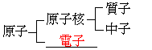

第 6 章 物質的基本結構
6-1 元素與化合物
焦點一：純物質分類、元素與化合物定義、元素符號與命名
1. 純物質的分類與物質分類圖
(1) 純物質：具有固定的組成與性質（固定熔點、沸點與密度），不可用物理方法分離。分為 元素 與 化合物。
(2) 混合物：由兩種或兩種以上純物質混合而成，無固定熔、沸點，可用 物理方法（如過濾、結晶、蒸餾）分離。
2. 元素與化合物之比較
| 類別 | 定義 | 化學方法分解 | 熔、沸點 | 實例 |
|---|
| 元素 |
無法再用化學方法分解的純物質（由同一種原子構成）。 |
不可以 |
固定 |
$H2$、$O2$、$Au$、$Fe$ |
| 化合物 |
由兩種或兩種以上元素以一定比例組合的純物質。 |
可以 |
固定 |
$CO2$、$H2O$、$NaCl$ |
3. 元素符號及中文命名原則
(1) 元素符號：取元素英文或拉丁文名稱第一個字母大寫表示（如碳 C、氧 O）；若字首相同，則附加一小寫字母區別（如鈣 Ca、鉻 Cr、氯 Cl）。
(2) 中文部首與狀態：配合常溫常壓狀態命名：
固態金屬：以 「金」 部表示（例：鈉、鐵、銅、金）。
固態非金屬：以 「石」 部表示（例：碳、硫、矽、碘）。
液態元素：以 「水」 部表示（例：金屬汞 Hg、非金屬溴 Br）。
氣態元素：以 「气」 部表示（例：氧、氮、氫、氦、氯）。
6-1 隨堂評量 ＆ 6-2 元素的通性
6-1評量（Q1～Q2） ｜ 金屬與非金屬特性對照
【解析】水（$H2O$）是由氫和氧兩種元素化合而成的化合物，不是元素。鈉（Na）、氧（O₂）、碳（C）皆為純元素。
(A) 3、1、5
(B) 3、5、1
(C) 5、2、2
(D) 3、2、4
【解析】常溫常壓狀態分析：氣態 3 種（氫、氦、氯）；液態 2 種（汞金屬、溴非金屬）；固態 4 種（銅、銀、硫、碳）。故為 3、2、4，答案選 (D)。
6-2 焦點二：金屬元素與非金屬元素的通性比較
| 性質 | 金屬元素 | 非金屬元素 |
|---|
| 常溫常壓狀態 |
多數為固態；只有 汞（水銀，Hg） 是唯一的液態金屬。 |
多為固態或氣態；只有 溴（Br） 為唯一的液態非金屬。 |
| 外觀顏色 |
大部分為銀白或銀灰色；例外：金（Au） 為黃色、銅（Cu） 為紅棕色。 |
顏色多樣（碳為黑、硫為黃、氯氣為黃綠、溴為紅棕、碘為紫黑）。 |
| 金屬光澤 |
具有特殊金屬光澤，拋光後能反光。 |
大多沒有金屬光澤（表面暗淡）。 |
| 延展性 |
富延展性，受敲擊不易破碎，可拉成細絲或打成薄片。 |
固態大多質脆易碎，不具延展性。 |
| 導電與導熱 |
電與熱的良導體（導電度：銀 ＞ 銅 ＞ 金 ＞ 鋁）。 |
大多為電與熱不良導體；例外：石墨（碳，C） 可導電！ |
6-2 生活中常見的元素（一）
常見金屬元素：金、鐵、銀、銅、鋁、汞、鈦之性質與用途
| 元素／符號 | 主要特性與性質 | 重要生活用途 |
|---|
金
（Au） |
• 黃 色固體，化學性質極安定，不易氧化（真金不怕火煉）。
• 金屬中 延展性 最佳。 |
• 飾品、錢幣、高級電子工業電路板接線。 |
鐵
（Fe） |
• 銀白色，地殼中金屬含量第 二 位（僅次於鋁）。
• 在空氣中容易生鏽，鐵鏽疏鬆無法保護內部。 |
• 建築材料、鐵釘、鐵鍋。
• 與碳混合製鋼；與鎳、鉻製成不鏽鋼抗腐蝕。 |
銀
（Ag） |
• 金屬中導電性與導熱性第 一 位。
• 延展性僅次於金。 |
• 錢幣、首飾、精密儀器導電接點。
• 溴化銀（感光材料）、變色鏡片。 |
銅
（Cu） |
• 紅棕 色，導電性與導熱性金屬中排名第 二。
• 延展性佳。 |
• 電線、導電元件、硬幣。
• 合金：青銅（銅＋錫，香爐、銅像）；黃銅（銅＋鋅，樂器、水龍頭）。 |
鋁
（Al） |
• 地殼中含量第 一 的金屬元素。
• 密度小，表面能生成緻密 氧化鋁 保護層防止內部鏽蝕。 |
• 鋁門窗、鋁箔紙、易開罐。
• 鋁合金質輕堅硬，作飛機外殼、筆電外殼。 |
汞
（Hg） |
• 常溫常壓下唯一 液 態金屬，俗稱水銀。
• 密度大、導電佳，具神經毒性。 |
• 水銀溫度計、血壓計、氣壓計、日光燈管、水銀電池。 |
鈦
（Ti） |
• 質輕、強度高、耐腐蝕、耐高溫。
• 二氧化鈦（$TiO2$）俗稱鈦白粉。 |
• 航太火箭、人工關節、球桿。
• 鈦白粉用於立可帶、防曬油；奈米級作光觸媒。 |
6-2 生活中常見的元素（二）
常見非金屬元素：矽（Si）、碳（C 同素異形體）、硫（S）之性質與用途
| 元素／符號 | 主要特性與性質 | 重要生活用途 |
|---|
矽
（Si） |
• 地殼中含量第 二（僅次於氧），多以二氧化矽或矽酸鹽化合物存在。
• 具半導體特性，導電性介於金屬與非金屬之間。 |
• 玻璃、陶瓷、光纖製造。
• 電腦晶片、積體電路、矽晶圓的核心原料。 |
碳
（C） |
• 在自然界中有多種形態（同素異形體）：
① 煤炭/木炭：黑色粉末或塊狀，含雜質。
② 鑽石（金剛石）：無色透明結晶，自然界硬度最高物質，不導電。
③ 石墨：灰黑質軟易剝落，唯一可導電的非金屬。
④ 石墨烯：單原子層奈米材料，強韌、透明且導電極佳。
⑤ 活性碳：多孔隙構造，具強大吸附力。 |
• 木炭/煤炭：燃料。
• 鑽石：飾品、工業切割刀具。
• 石墨：鉛筆芯、乾電池電極、高溫潤滑劑。
• 活性碳：脫色劑、除臭劑、防毒面具、濾水器。
• 石墨烯：先進觸控面板、高效電池電極。 |
硫
（S） |
• 黃 色固體，俗稱硫磺，質脆易碎。
• 常見於火山噴氣孔與溫泉區，燃燒產生具刺激性二氧化硫氣體。 |
• 製造黑火藥、煙火、鞭炮。
• 製造硫酸（工業之母）、輪胎橡膠硫化劑。 |
💡 地殼元素含量口訣：「氧、矽、鋁、鐵、鈣、鈉、鉀、鎂」（前二名非金屬：氧 ＞ 矽；前二名金屬：鋁 ＞ 鐵）。
💡 導電性排行：銀 ＞ 銅 ＞ 金 ＞ 鋁（做電線選銅是因為導電好且成本合理）。
6-2 隨堂實戰評量（一）
金屬與非金屬通性、導電導熱、石墨特性（第 1～4 題）
(A) 石墨為黑色不具延展性的固體，且具有導電性
(B) 金屬都是以固態存在，且為熱、電的良導體
(C) 汞為金屬元素，在常溫下為銀白色液體
(D) 硫可用來製作硫酸與用於煙火的黑火藥
【解析】(B) 錯誤：汞（水銀，Hg）在常溫常壓下為液態金屬，並非所有金屬都是固態。(A)(C)(D) 敘述皆完全正確。
(A) 導電性最好的是金
(B) 延展性最好的是銀
(C) 電線主要的材料是銅
(D) 價格以銀最貴，銅最便宜
【解析】(A) 錯誤：導電性最好的為銀。(B) 錯誤：延展性最好的為金。(C) 正確：銅導電性僅次於銀，且成本比金銀便宜很多，故常作為電線主要材料。(D) 錯誤：價格以金最貴。
(A) 常溫時，以固態、液態或氣態存在
(B) 大多為熱及電的不良導體
(C) 非金屬元素大多為銀灰色
(D) 固態的非金屬不具延展性，易敲碎
【解析】(C) 錯誤：非金屬元素沒有固定顏色，大多不具銀灰色（銀灰色通常是金屬外觀特徵）。(A)(B)(D) 均為非金屬通性。
(A) 可導電的金屬元素
(B) 可作為碳鋅電池的電極
(C) 黑色，容易剝落
(D) 可做鉛筆的筆芯
【解析】(A) 錯誤：石墨成分為碳，碳是「非金屬元素」，石墨是唯一能導電的非金屬元素，並非金屬元素。
6-2 隨堂實戰評量（二）
金的安定性、碳的形態、矽的半導體特性（第 5～7 題）
(A) 世界礦產區多，產量豐富
(B) 金富延展性，可以抽成細絲或壓成金箔
(C) 是一種導電與導熱性良好的金屬
(D) 金的性質安定，在高溫下也不易與其他物質反應
【解析】「真金不怕火煉」是指金在高溫灼燒下仍然不氧化變質，是因為金的化學活性極小、性質極度安定。答案選 (D)。
(A) 碳粉為暗紅色的粉末，常溫下極為安定
(B) 石墨具有良好的導電能力，常用來製造碳電極
(C) 活性碳可吸附雜質，常作為脫色劑、脫臭劑和水的濾清劑
(D) 鑽石是一種無色透明的碳結晶，硬度最高，可切割任何物質
【解析】(A) 錯誤：碳粉為黑色粉末，並非暗紅色（暗紅色是紅磷等物質的顏色）。(B)(C)(D) 敘述皆正確。
(A) 元素符號為 Si
(B) 矽晶體為黃色，不具金屬光澤
(C) 以化合物的形式存在各種礦石中
(D) 可製作半導體元件和積體電路
【解析】(B) 錯誤：純矽晶體為深灰色，且具有微弱的金屬光澤；黃色固體為硫（S）。矽具半導體特性，是積體電路重要原料。答案選 (B)。
6-3 原子結構（一）
焦點三：道耳頓原子說 ｜ 電子、質子、中子的發現史
1. 道耳頓的「原子說」（1803年提出）
(1) 不可分割：一切物質皆由極微小、不可再分割的微粒—— 原子 所組成。（後被湯姆森發現電子所修正）
(2) 同種相同：同種元素的原子，其質量與性質皆相同；不同元素的原子，其質量與性質不同。（後被同位素的發現所修正）
(3) 化合成物：化合物是由不同種原子以簡單的 整數比 化合而成。
(4) 重組不滅：化學反應只是原子間 重新排列 結合，原子不會被創造、消滅或變成另一種原子（質量守恆）。
2. 原子內部結構的發現歷程
| 粒子 | 發現順序 | 發現者 | 電性 | 質量關係 | 科學意義與影響 |
|---|
電子
（$e-$） |
第 1 位
（1897） |
湯姆森 |
帶 負電（−） |
質量極小
（約質子的 $\frac{1}{1836}$） |
由陰極射線實驗發現，打破「原子不可分割」的說法。 |
質子
（$p+$） |
第 2 位
（1919） |
拉塞福 |
帶 正電（＋） |
約為電子的
1836 倍 |
α 粒子散射實驗發現原子核，進而發現質子。原子質量集中於核。 |
中子
（$
0$） |
第 3 位
（1932） |
查兌克 |
不帶電（電中性） |
與質子質量相近
（約 1838 倍電子） |
證實核內除了質子，還有不帶電的中子維繫原子核。 |
💡 發現順序口訣：「電、質、中」（湯姆森發現電子 → 拉塞福發現原子核與質子 → 查兌克發現中子）。
6-3 原子結構（二）
焦點四：原子內部模型、原子序、質量數與元素符號表示法
1. 原子模型與空間分布
(1) 原子核：位於原子中心，體積極小但集中了原子幾乎所有的質量（含 質子 與 中子）。
(2) 核外電子：帶負電的電子在核外廣大空間中高速運動，體積極小、質量可忽略。
(3) 電中性原則：正常原子為電中性，故：
電中性時： 質子數 ＝ 電子數 ＝ 原子序
2. 原子序與質量數公式
① 原子序（Z）：原子核內的 質子數，決定元素的種類與化學性質。
② 質量數（A）：質子數 ＋ 中子數（整數，代表核內粒子總數）。
3. 元素符號表示範例（以鋰 73Li 為例）
💡 對於 73Li：
• 原子序 $Z = 3$ $\rightarrow$ 質子數 ＝ 3 個，電子數 ＝ 3 個。
• 質量數 $A = 7$ $\rightarrow$ 中子數 ＝ 質量數 − 質子數 ＝ $7 - 3 =$ 4 個。
6-3 隨堂實戰評量（一）
粒子數質量計算、電中性原子、道耳頓原子說（第 1～4 題）
(A) 甲＝乙＜丙＝丁
(B) 甲＞乙＞丙＞丁
(C) 甲＜乙＝丙＜丁
(D) 甲＜乙＜丙＜丁
【解析】原子的質量主要由原子核決定，即質量數（質子數＋中子數）：甲質量數12、乙13、丙16、丁18，故質量大小為甲＜乙＜丙＜丁。答案選 (D)。
(A) X＝Y
(B) Y＝Z
(C) X＝Z
(D) X＝Y＝Z
【解析】電中性原子中，正電荷總量等於負電荷總量，即質子數（Z）必等於核外電子數（X），因此 X＝Z。中子數 Y 不一定等於質子數。答案選 (C)。
(A) 電子
(B) 中子
(C) 質子
(D) 原子核
【解析】決定元素種類的是「質子數」（原子序）。若原子變成另一種元素的原子，表示質子數發生了改變，故必放出了質子。答案選 (C)。
(A) 物質發生化學反應時，會生成新原子
(B) 物質皆由不可被分割的原子所組成
(C) 化合物是由不同元素的原子以簡單整數比結合而成
(D) 化學反應將原子重新排列組成新物質
【解析】(A) 錯誤：化學反應中原子只是重新排列，絕不會生成新原子，原子不滅。(B)(C)(D) 皆為道耳頓原子說的原始內容。
6-3 隨堂實戰評量（二）
原子模型辨識、小蘇打分解、碳同位素（第 5～8 題）
(A) 核內 2 質子、2 中子，核外 2 電子
(B) 核內 2 質子、1 中子，核外 2 電子
(C) 核內 2 質子、3 中子，核外 2 電子
(D) 核內 3 質子、3 中子，核外 3 電子
【解析】決定元素種類的是「質子數（原子序）」：(A)(B)(C) 的核內質子數皆為 2（均為氦元素，互為同位素）；(D) 核內質子數為 3（為鋰元素），非同一元素。答案選 (D)。
(A) $CO2$
(B) $H2O$
(C) $NaCl$
(D) $Na2CO3$
【解析】反應物 $NaHCO3$ 含有鈉（Na）、氫（H）、碳（C）、氧（O）四種原子，不含氯（Cl）原子。化學反應中原子不會無中生有，故絕不可能生成含有氯的 $NaCl$。
(A) 此三種碳原子中的中子數不同
(B) 此三種碳原子中的電子數不同
(C) 此三種碳原子中的質量數相同
(D) 此三種碳原子中的質子數不同
【解析】此三種為同位素：左下角質子數皆為 6（質子數、電子數相同，化學性質相同）；左上角質量數分別為 12、13、14（中子數分別為 6、7、8，中子數不同）。故 (A) 正確。
(A) 甲乙
(B) 乙丙
(C) 丙丁
(D) 甲丙
【解析】(甲)錯誤：原子質量幾乎全部集中在原子核；(乙)正確：電中性時質子數＝電子數；(丙)正確：質子質量約為電子1836倍；(丁)錯誤：質子數與中子數不一定相等（如碳-13、鋰-7）。故選乙丙。答案為 (B)。
6-4 週期表
焦點五：週期表規律性、橫列週期與縱行族、四大重要族性質
1. 週期表的建立與排列規則
(1) 排列依據：現今週期表是依據元素的 原子序（質子數） 由小到大排列，性質隨原子序呈現規律性與週期性。
(2) 週期（橫列）：從上到下共有 7 個週期（同週期元素具有相同的電子殼層數）。
(3) 族（縱行）：從左到右共分為 1 ～ 18 族。同族元素具有相似的 化學 性質。
(4) 分區分布：左側與中間大多為 金屬 元素；右側大多為 非金屬 元素；交界處為半金屬（如矽、鍺）。
2. 週期表四大家族重點特性
| 家族名稱 | 所屬族別 | 代表元素 | 關鍵特性與保存方式 |
|---|
| 鹼金屬 |
第 1 族
（IA族） |
鋰（Li）、鈉（Na）、
鉀（K）、銣、銫 |
• 質地柔軟可用刀切，密度小、熔點低。
• 活性極強，與水反應劇烈產生 氫氣 與鹼性水溶液，放出大量熱起火。
• 平時必須儲存於 礦物油（石油） 中。 |
| 鹼土金屬 |
第 2 族
（IIA族） |
鈹（Be）、鎂（Mg）、
鈣（Ca）、鍶、鋇 |
• 活性大，在自然界多以化合物存在地殼（土）中。
• 氧化物溶於水呈 鹼 性。
• 鎂、鈣、鋇的離子與碳酸根（$CO32-$）形成白色碳酸鹽沉澱。 |
| 鹵素 |
第 17 族
（VIIA族） |
氟（F）、氯（Cl）、
溴（Br）、碘（I） |
• 最 活潑 的非金屬元素家族，常溫下為雙原子分子（$F2, Cl2, Br2, I2$）。
• 具有毒性與刺激性，狀態多變：氟氣（淡黃氣）、氯氣（黃綠氣）、溴（紅棕液）、碘（紫黑固）。 |
鈍氣
（惰性氣體） |
第 18 族
（VIIIA族） |
氦（He）、氖（Ne）、
氬（Ar）、氪、氙、氡 |
• 常溫常壓下皆為無色無味氣體，均為單原子分子。
• 化學性質極度安定，不易與其他物質反應。
• 氬氣常用於填裝鎢絲燈泡；氖氣用於霓虹燈。 |
6-4 隨堂實戰評量（一）
歸類依據、同族化學性質、鈉的活性（第 1～5 題）
(A) 常溫時的狀態
(B) 化學性質
(C) 密度大小
(D) 顏色
【解析】週期表將元素依原子序排列，縱行稱為族，同族元素具有相似的「化學性質」。答案選 (B)。
(A) 週期表上共有 9 個族
(B) 週期表上共有 16 個週期
(C) 同週期的元素，其化學性質相似
(D) 同族的元素，其化學性質相似
【解析】週期表共有 7 個週期（橫列）與 18 族（縱行）。同族的元素化學性質相似（同週期化學性質不相似）。答案選 (D)。
(A) 鈉性質活潑，容易與水反應
(B) 鈉在常溫下為固體，質地堅硬不易變形
(C) 鈉與水反應後遇石蕊試紙呈紅色
(D) 一般而言，鈉都存放在酒精中
【解析】(A) 正確：鈉為鹼金屬，活性極大，與水劇烈反應。(B) 錯誤：鈉質地柔軟可用小刀切開。(C) 錯誤：水溶液呈鹼性，使石蕊試紙呈藍色。(D) 錯誤：鈉與酒精會反應，必須存放在礦物油中。
(A) 鉀、鎂
(B) 鋁、鈣
(C) 鈹、鎂
(D) 鈉、鍶
【解析】具有類似化學性質的元素必須在「同一族（同一縱行）」：鈹（Be）與鎂（Mg）同屬於第 2 族（鹼土金屬族），特性最相似。答案選 (C)。
【解析】鈣（Ca）屬於第 2 族（鹼土金屬族：鈹、鎂、鈣、鍶、鋇），鋇（Ba）也是第 2 族元素，兩者同族。鈉是第 1 族。答案選 (C)。
6-4 隨堂實戰評量（二）
橫列原子序規律、元素方格圖辨析、鹼金屬保存（第 6～9 題）
(A) 甲
(B) 乙
(C) 丙
(D) 無法確定
【解析】週期表在同一橫列（週期）中，原子序由左至右依序遞增，排在最右側的丙原子序最大。答案選 (C)。
(A) 原子核內所含質子數
(B) 原子核外所含電子數
(C) 常溫時屬於氣態
(D) 常溫時呈現黃綠色
【解析】方格資訊：原子序 17（代表核內質子數與電中性核外電子數為 17）；中文名稱「氯」有「气」部首代表常溫為氣態。但方格中沒有標註顏色（黃綠色），無法從圖中直接獲知。答案選 (D)。
(A) 鹼金屬元素
(B) 鹼土金屬元素
(C) 鹵素
(D) 鈍氣
【解析】最左邊第 1 族金屬稱為「鹼金屬元素」；第 2 族為鹼土金屬；第 17 族為鹵素；第 18 族為鈍氣。答案選 (A)。
(A) Na、Au
(B) Na、Cu
(C) Na、K
(D) Au、Cu
【解析】鈉（Na）與鉀（K）皆屬於第 1 族鹼金屬，化學活性極大，在空氣中易氧化且與水劇烈反應，因此平時必須隔絕空氣和水分，儲存在礦物油（石油）中。答案選 (C)。
6-5 分子與化學式（一）
焦點六：分子概念、元素與化合物微觀模型、化學式書寫七大原則
1. 分子的概念
(1) 定義：分子 是表現純物質化學特性的最小微粒，大多由 2 個或 2 個以上原子結合而成。
(2) 分子的分類：
a. 元素分子：由同種原子結合而成，如單原子分子 He，雙原子分子 O2、N2，三原子分子 O3（臭氧）。
b. 化合物分子：由不同種原子結合而成，如水 H2O、二氧化碳 CO2。
c. 非分子物質：金屬（如 Fe、Cu、Na）與離子化合物（如食鹽 NaCl）是由連續網絡排列而成，無獨立單一分子。
2. 化學式書寫原則
(1) 定義：利用 元素符號 及 數字 表示純物質組成的式子。分子式能表達一個分子中所含原子的種類與個數。
(2) 七大書寫規則：
① 單原子氣體與金屬：直接以符號表示，如氦 He、鈉 Na、鐵 Fe、銅 Cu。
② 常見氣體分子：氧氣為 O2、氮氣為 N2、氫氣為 H2、臭氧為 O3。
③ 多個分子表示法：數字寫在最前面，例如 2 個水分子寫成 2H2O。
④ 金屬＋非金屬：金屬放左邊，非金屬放右邊（與中文唸法相反！），如氯化鈉 NaCl、氯化鈣 CaCl2。
⑤ 含氧化合物：氧通常寫在後面，如二氧化碳 CO2、氧化鎂 MgO、氧化銅 CuO。
⑥ 有機化合物（含碳、氫、氧）：順序為碳 → 氫 → 氧，如葡萄糖 C6H12O6。
⑦ 特定原子團：通常寫在後面，如氫氧化鈉 NaOH、硫酸 H2SO4、碳酸鈣 CaCO3。
6-5 分子與化學式（二）
焦點七：國中必背常見化學式完整對照速查表
| 物質中文名稱 | 化學式 | 物質中文名稱 | 化學式 | 物質中文名稱 | 化學式 |
|---|
| 氦氣 | He |
氯化鈉（食鹽） | NaCl |
葡萄糖 | C6H12O6 |
| 氫氣 | H2 |
氯化鈣 | CaCl2 |
蔗糖 | C12H22O11 |
| 氮氣 | N2 |
氧化鎂 | MgO |
氫氧化鈉 | NaOH |
| 氧氣 | O2 |
氧化銅 | CuO |
氫氧化鈣（熟石灰） | Ca(OH)2 |
| 臭氧 | O3 |
二氧化錳 | MnO2 |
硫酸 | H2SO4 |
| 水 | H2O |
二氧化碳 | CO2 |
鹽酸（氯化氫） | HCl |
| 雙氧水（過氧化氫） | H2O2 |
一氧化碳 | CO |
硝酸 | HNO3 |
| 氨氣（阿摩尼亞） | NH3 |
碳酸鈣（大理石） | CaCO3 |
硝酸鉀 | KNO3 |
| 甲烷（天然氣） | CH4 |
碳酸鈉（純鹼） | Na2CO3 |
硫酸銅 | CuSO4 |
| 二氧化硫 | SO2 |
碳酸氫鈉（小蘇打） | NaHCO3 |
酒精（乙醇） | C2H5OH |
💡 化學式記憶小技巧：
• 中文「某化某」順序顛倒：如「氯化鈉」符號是 Na 先寫，Cl 後寫 → NaCl。
• 數字代表原子比例：如二氧化碳有 2 個氧，寫為 CO2；氯化鈣鈣帶正 2 價、氯帶負 1 價，結合比為 1 : 2 → CaCl2。
6-5 隨堂實戰評量（一）
微觀粒子模型判斷、化學式規則、化學式正誤（第 1～3 題）
(A) 乙
(B) 丙
(C) 甲、丁
(D) 乙、丙
【解析】微觀分析：甲（同一種單原子純物質，為元素）；乙（由黑白兩種原子構成的化合物）；丙（含純白雙原子與純黑雙原子，為混合物）；丁（由同種原子構成的雙原子分子，為元素）。故甲、丁屬於元素。答案選 (C)。
(A) 氧化物中的氧寫在右邊
(B) 金屬化合物中金屬放右邊
(C) 通常具有特定性質的原子團寫在右邊
(D) 有機化合物碳、氫、氧的排列順序中，碳排在最左邊
【解析】(B) 錯誤：金屬化合物中，金屬符號寫在「左邊（前面）」，非金屬符號寫在右邊（例如 NaCl、CaO）。(A)(C)(D) 皆為正確規則。
(A) 1 個
(B) 2 個
(C) 3 個
(D) 4 個
【解析】錯誤分析：① Na2Cl 錯誤（應為 NaCl）；② KNO3 正確；③ MnO2 正確；④ Ca2CO3 錯誤（應為 CaCO3）；⑤ HO2 錯誤（雙氧水應為 H2O2、水為 H2O）。共有 3 個寫錯。答案選 (C)。
6-5 隨堂實戰評量（二）
元素與化合物微觀概念、純物質辨析（第 4～5 題）
【解析】水（H2O）由氫與氧結合而成，為化合物。氧（O2）、鈉（Na）、氦（He）皆為元素。答案選 (A)。
(A) 元素具有固定的性質
(B) 化合物不能用物理方法分解為更簡單的物質
(C) 食鹽是一種化合物
(D) 化合物是混合物，故無一定的性質
【解析】(D) 錯誤：化合物屬於「純物質」，具有固定的組成比例與固定的物理/化學性質（固定熔點與沸點），絕非混合物！
🎯 重點回顧：純物質與混合物微觀辨析法
• 元素（單質）：由「同一種原子」組成，可以是單原子分子（如 He、Ne）、雙原子分子（如 O2、N2）、多原子分子（如 O3）或巨大網絡金屬（如 Fe、Cu）。
• 化合物：由「兩種或兩種以上不同原子」以一定比例化合形成的純物質（如 H2O、CO2、NaCl）。具有固定的化學組成與固定的熔點、沸點。
• 混合物：由兩種或兩種以上純物質混合而成，沒有固定的熔點、沸點（如空氣、食鹽水、黃銅、粗鹽）。
第 6 章 核心重點整理（一）
6-1 元素與化合物 ｜ 6-2 常見元素 ｜ 6-3 原子結構 精華挖空檢測
6-1 元素與化合物
1. 元素：無法再用化學方法分解的純物質（如金、氧氣）。
2. 化合物：由兩種或兩種以上元素以一定比例組合的純物質（如水、食鹽）。
3. 元素符號取英/拉丁文首字母大寫；中文命名金屬為「金」部，固態非金屬為「石」部，液態為「水」部（汞、溴），氣態為「气」部。
6-2 生活中常見的元素
1. 唯一的液態金屬為 汞（水銀，Hg）；唯一的液態非金屬為 溴（Br）。
2. 金屬延展性最佳為 金（Au）；導電與導熱性最好為 銀（Ag），居次且做電線為 銅（Cu）。
3. 鋁（Al）密度小，表面能生成緻密 氧化鋁 保護層防止內部生鏽。
4. 唯一可導電的非金屬元素為 石墨（碳，C）；半導體工業基石為 矽（Si）。
6-3 原子結構
1. 道耳頓原子說：物質由不可分割的 原子 組成；化學反應只是原子間 重新排列，原子不滅。
2. 基本粒子發現順序：電子（湯姆森） → 質子（拉塞福） → 中子（查兌克）。
3. 原子質量集中於體積極小的 原子核（質子＋中子）。質子質量約為電子質量的 1836 倍。
4. 原子序 ＝ 質子數 ＝ 電子數（電中性時）。質量數 ＝ 質子數 ＋ 中子數。

▲ 原子內部基本粒子構造
第 6 章 核心重點整理（二）
6-4 週期表四大族 ｜ 6-5 分子與化學式 精華挖空檢測
| 家族名稱 | 族別 | 代表元素 | 核心考點與特性 |
|---|
| 鹼金屬 |
第 1 族 |
鋰（Li）、鈉（Na）、鉀（K） |
質軟、熔點低，與水劇烈反應產生 氫氣 與鹼性水溶液，儲存於 礦物油 中。 |
| 鹼土金屬 |
第 2 族 |
鎂（Mg）、鈣（Ca）、鋇（Ba） |
氧化物溶於水呈鹼性，其離子與碳酸根結合產生 白色碳酸鹽沉澱。 |
| 鹵素 |
第 17 族 |
氟（F）、氯（Cl）、溴（Br）、碘（I） |
最活潑的非金屬，具毒性與刺激性，常態為 雙原子分子。 |
| 鈍氣（惰性氣體） |
第 18 族 |
氦（He）、氖（Ne）、氬（Ar） |
化學性質最安定不易反應，常態皆為 單原子分子。 |
6-5 分子與化學式
1. 分子 是表現物質化學特性的最小微粒；由元素符號與數字表示組成的式子稱為 化學式。
2. 微觀粒子圖判斷重點：
• 只含同一種顏色且大小相同原子 → 元素。
• 每個分子由兩種或以上不同原子固定結合 → 化合物。
• 箱內有兩種或兩種以上獨立不同分子 → 混合物。
3. 國中必背十大化學式快速通關：水 H2O、雙氧水 H2O2、食鹽 NaCl、小蘇打 NaHCO3、碳酸鈣 CaCO3、二氧化碳 CO2、葡萄糖 C6H12O6、氧化銅 CuO、硫酸 H2SO4、氫氧化鈉 NaOH。